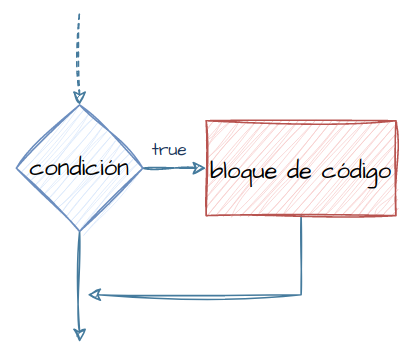
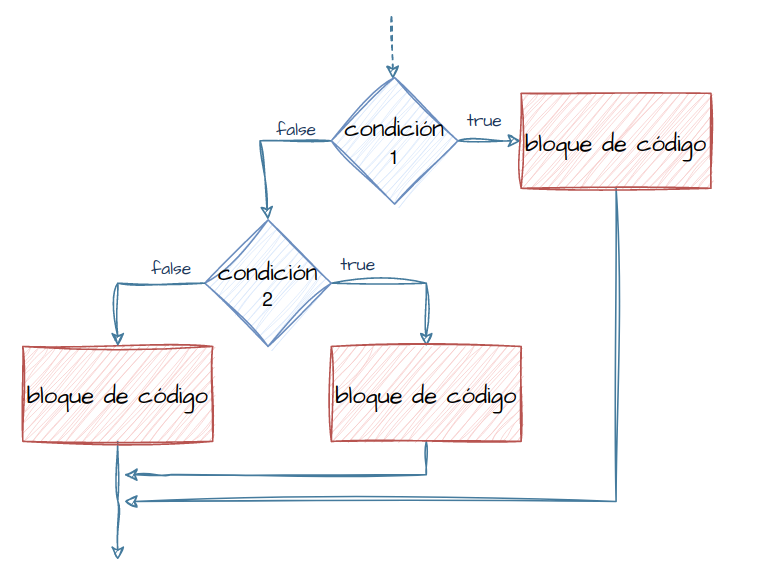
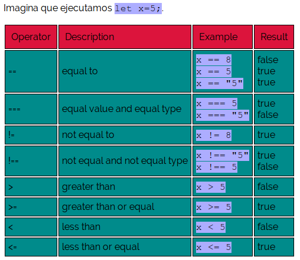
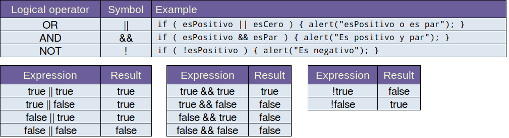
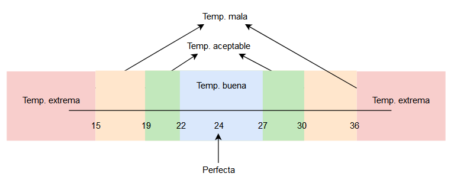
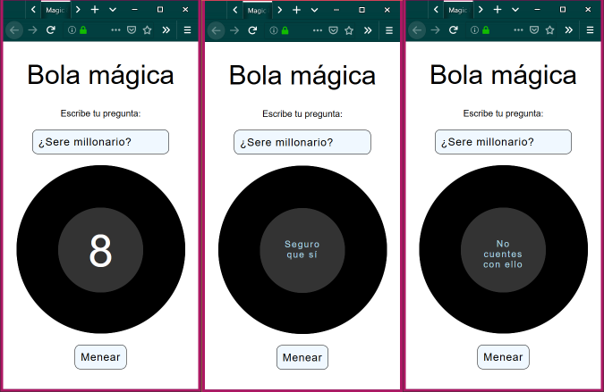
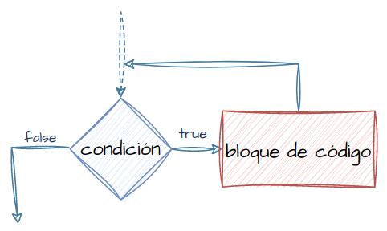
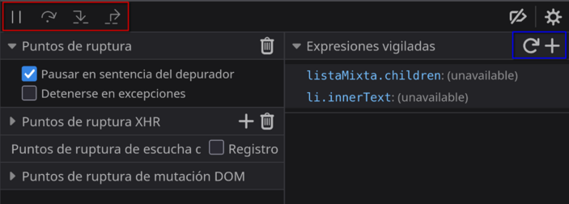

2c - Estructuras de control
Contenido básico:
- Condicionales
- Bucles
Condicionales
A veces necesitamos ejecutar diferentes acciones según alguna condición. La instrucción if evalua la condición y si el resultado es true, ejecuta un bloque de código.

Ejemplo:
let año = prompt("¿En qué año fue la revolución española de 1868 conocida como 'La Gloriosa'?");
if ( año == 1868 ){
alert( "¡Correcto!" );
}
Nota: En javascript, 0 será considerado false; cualquier otro valor numérico se considera true (incluso Infinity o -Infinity).
Sintaxis completa:
if ( condición1 ){
//this code will be executed if the condición1 is true
}
else if (condición2 ){
//this code will be executed if the condición2 is true
}
else{
//this code will be executed if both conditions were false
}

Condiciones

Nota: acostúmbrate a utilizar === en las comparaciones en lugar de == para evitar comportamientos extraños. Por ejemplo:
undefined == null --> true true == 1 --> true [] == 0 --> true
Ejercicio 7.1
Intenta adivinar el resultado de estas condiciones. ¿true o false?
let a = 5; let b = 30; a == a 5 > 5 5 <= a 60 >= b a != b a + b == 35 "gato" != "perro" "gato" == "Gato" b != 30
Podemos usar cualquier cosa como condición, incluso funciones (especialmente si devuelven un valor). Los valores especiales como undefined o null se consideran false, pero aún así podemos tener resultados inesperados.
Por ejemplo, ¿qué se obtiene al ejecutar este código?
if(null < 58)console.log("null con 58");
if(undefined < 58)console.log("undefined con 58");
if(undefined < null)console.log("undefined con null");
if(undefined < -Infinity)console.log("undefined con -Infinity");
Ejercicio 7.2
Entra en la carpeta Ej7.2 - Condiciones. Puedes modificar el código fuente del archivo Javascript para realizar pruebas.
Operadores lógicos

Ejercicio 7.3
Intenta averiguar qué se imprimirá en la consola con este código.
let a = 26;
let b = 13;
if( b > a )
console.log("1");
if ( b*2 == a )
console.log("2");
if ( b >= a*2 )
console.log("3");
if ( b != a*2 )
console.log("4");
else
console.log("5");
if ( a == 26 && b <26 )
console.log("6");
let c = 8;
if ( c > b || b != a )
console.log("7");
else
console.log("8");
if ( c != 26 || b == 26 )
console.log("9");
else
console.log("10");
if ( a > b && b > c )
console.log("11");
Ejercicio para repasar en clase
Suponiendo que tenemos la función getPH() que se conecta a un servidor externo y a unos sensores que nos indican la calidad del agua de una piscina de un hotel.
Crea un código javascript que indique si el agua tiene un ph neutro (entre 6.5 y 8.5), ligeramente alcalino (entre 8.5 y 11), muy alcalino (mayor que 11), ligeramente ácido (entre 3.5 y 6.5) o muy ácido (menor que 3.5).
Ejercicio 7.4
Responde a estas preguntas:
- ¿Qué hace este código?
- ¿Qué se imprimirá si nombre fuera "Javier"?
- ¿Y si fuera "Paco"?
- ¿Y si fuera "O"?
- ¿Qué valor o valores debe tener nombre para que se imprima solamente "¡Hola caracola!" y nada más.
- ¿Qué valor podría tener nombre para que se imprima solamente "Ola ke ase?". Nota: escribe un valor que no haya salido ya.
- ¿Qué valor podría tener nombre para que se imprima "Ola ke ase?" y luego "No te conozco, pero tienes un nombre corto... aunque podría ser más corto." Nota: escribe un valor que no haya salido ya.
let nombre = document.querySelector("#txtNombre").value;
if ( nombre == "Javier" )
console.log("¡Hola caracola!");
else
console.log("Ola ke ase?");
if ( nombre != "Javier" && (nombre.length >1 && nombre<=5)
alert("No te conozco, pero tienes un nombre corto... aunque podría ser más corto.");
Ejemplo resuelto
En una oficina se nos encarga crear un código en javascript que sirva para diferenciar rangos de temperatura, asignando una etiqueta en función de si la temperatura se considera perfecta, buena, aceptable, mala o extrema. Para ello te dan el siguiente gráfico y la función getTemperatura() que devolverá la temperatura actual de la sala.

Solución
//función que devuelve la temperatura actual de la habitación
let temperatura = getTemperatura();
if ( temperatura == 24 ){
console.log( "Temp. perfecta" );
}
else if ( temperatura >= 22 && temperatura <= 22
console.log("Temp. buena");
}
else if ( temperatura >= 19 && temperatura <= 19
console.log("Temp. aceptable");
}
else if ( temperatura <15 || temperatura >36 ){
console.log("Temp. extrema");
}
else{
console.log("Temp. mala");
}
Ejercicio 7.5: Casa de la cultura
Crea una página web que sirva de formulario de inscripción a un curso de fotografía de la Casa de la cultura de Utrera. Para ello básate en el archivo index.html que encontrarás en la carpeta del ejercicio. Todo lo que tienes que hacer y añadir en la web lo harás dentro de la división cuyo id es formulario.
Añade un encabezado de nivel 1 con el texto "Curso de fotografía".
Añade a continuación tres párrafos a la web. En el primero aparecerá el siguiente texto: "El 18 de Mayo se ha concertado un curso de fotograría para aprender a manejar técnicas de dirección de modelos, iluminación, revelado y postproducción. El curso será impartido en las instalaciones del centro norte."
En el segundo párrafo explica con tus palabras que se pueden matricular en el curso aquellos mayores de edad hasta 67 años y que hay dos turnos que serán Mañana y Tarde.
En el último párrafo añade la información que te parezca oportuna.
Después de los párrafos aparecerán los textboxes. La página web contendrá cinco textboxes, en el primero la persona interesada en el curso tendrá que teclear su nombre completo.
En el segundo deberá escribirse la edad.
En el tercero el turno elegido (debe indicarse en la web que los turnos posibles son "Mañana" o "Tarde").
Los dos últimos serán para incluir una contraseña que tendrá que escribirse dos veces (una vez en cada textbox).
Habrá un botón con el título "Validar" que servirá para validar los datos del cuestionario.
Incluye ahora una división con el id errores donde aparecerán los errores del formulario.
La función de validación de los datos se ejecutará cuando se pulse el botón validar. Se tendrá que comprobar:
- Si el textbox del nombre, de la edad o del turno están vacíos, aparecerá un mensaje en la división errores indicando que deben rellenarse todos los campos.
- También se comprobará que si ocupa más de 20 caracteres se mostrará un mensaje de error en la división errores.
- Si la edad no está entre 18 y 67, se mostrará un mensaje de error en la división errores.
- Si el turno no es "Mañana" o "Tarde" se mostrará un mensaje de error en la división errores.
- La contraseña escrita en los textboxes de contraseña tendrán que ser iguales, además tendrá que tener al menos 6 caracteres. Si no son iguales o no tiene al menos seis caracteres, se mostrará un mensaje de error en la división errores.
Por supuesto los errores que aparezcan deberán ser descriptivos y si hay varios errores, deberán mostrarse todos los mensajes de error.
Ejercicio 7.6
Intenta corregir los 6 errores de este código para que funcione como se espera.
/* FUNCTIONS */
//devuelve true si un número es par
function esPar ( num ) {
if( num%2 == 0 )
return true;
else
return false;
}
//devuelve true si un número es positivo
function esPositivo ( num ) {
if ( num <= 0 )
return true;
else
return false;
}
function esParYPositivo( numero )
{
//primero los pares
if ( esPar(numero){
if ( esPositivo(numero) ){
console.log(numero + " es par y positivo");
}
else {
console.log(numero + " es par y positivo");
}
}
//ahora los impares
if ( !esPar (numero) && !esPositivo (numero) ){
console.log(numero + " es impar y positivo");
}
else if (esPar (numero) && esPositivo (numero) ){
console.log(numero + " es impar y positivo");
}
}
/* MAIN */
esParYPositivo( 12 ); //Debe mostrar que es par y positivo
esParYPositivo( -12 ); //Debe mostrar que es par y negativo
esParYPositivo( 5 ); //Debe mostrar que es impar y positivo
esParYPositivo( -5 ); //Debe mostrar que es impar y negativo
}
Ejercicio 7.7: bola mágica
Crea una web que contenga un textbox en el que el usuario escribirá una pregunta y al pulsar un botón, mostrará una posible respuesta al azar (ver la imagen de abajo como ejemplo). Crea al menos 4 posibles respuestas.
Es decir, cuando se pulse el botón habrá que:
- Ocultar el número 8 (busca en google cómo se oculta un párrafo).
- Elegir un número al azar (busca en google cómo se genera un número al azar).
- Usando condicionales, mostrar un mensaje al azar (si el número aleatorio fue el 1, se mostrará el primer mensaje, si es el 2 el segundo mensaje y así sucesivamente).

Nota: para hacer la bola puedes copiar este trozo de código HTML:
<div id="bola">
<div id="gris">
<p id="ocho">8</p>
<p id="respuesta"></p>
</div>
</div>
Y usar estos estilos:
#bola {
background-color: black;
border: 1px solid black;
border-radius: 50%;
width: 300px;
height: 300px;
margin: 0 auto;
display:grid;
place-items: center;
}
#gris {
background-color: #333;
border: 1px solid #333;
border-radius: 50%;
width: 50%;
height: 50%;
display:grid;
place-items: center;
}
#ocho {
font-size: 5em;
color: white;
text-align: center;
line-height: 0;
&:empty{
display:none;
}
}
#respuesta {
padding: 25px;
color: lightblue;
letter-spacing: 2px;
&:empty{
display:none;
}
}
Ejercicio 7.8
Crea una página web en la que el usuario tenga que añadir ciertos datos sobre él. Tendrá un textbox para el Nombre, otro para los Apellidos, otro para el Tratamiento (don o doña), otro para la IP y otro más para el País (AR, ES, US, FR...).
Además habrá dos botones uno que pondrá "Rellenar" y otro que pondrá "Acceder". El de acceder no hará nada hasta que no estén todos los datos rellenos, cuando estén rellenos, simplemente mostrará un alert con un mensaje cualquiera.
El botón de Rellenar intenta usar el servicio https://www.geojs.io/ para saber el país y la IP.
Si está relleno el Nombre, intenta rellenar automáticamente el textbox Tratamiento. Para esto se usarán varios ifs anidados, por ejemplo, si el nombre es María el tratamiento será doña, si el nombre es Juan, el tratamiento será don, si el nombre es Pedro, el tratamiento será don, si el nombre es Ana, el tratamiento será doña... si el textbox Nombre no está relleno o el nombre no lo tenemos contemplado, el campo tratamiento no será rellenado automáticamente.
Nota: si el servicio geojs no funciona, se puede cambiar el ejercicio para que cuando la ip esté rellena saque los datos de aquí: https://ipvigilante.com/
Ejercicio 7.9: Estaciones del año (repaso)
Crea una web que contenga un textbox con un día, un textbox que contenga una fecha y un botón que al pulsarlo indique la estación a la que pertenece la fecha.
Ampliación: en vez de usar textboxes, intenta usar un input type="date"
Switch/case
let a = 'alto';
switch (a) {
case 'alto':
alert( 'Valor: 45' );
break;
case 'bajo':
alert( 'Valor: 30' );
break;
case 'medio':
alert( 'Valor: 40' );
break;
default:
alert( "Desconozco estos valores" );
}
Una solución alternativa usando un Map
let a = 'alto';
let m = new Map();
m.set('alto', 45);
m.set('bajo', 30);
m.set('medio', 40);
let valor = m.get(a);
if(valor) alert('Valor: ' + valor);
else alert( "Desconozco estos valores");
Try...catch
En Javascript también tenemos la típica estructura para capturar errores:
try {
// código...
} catch (err) {
// manipulación de error
}
Y por supuesto nosotros también podemos lanzar nuestros propios errores con throw new Error('Mensaje de error'); Aunque esto quizás no sea tan común.
Bucles
Funcionan igual que en otros lenguajes de programación. Repiten un bloque de instrucciones mientras la condición sea cierta o un número determinado de veces.

while (condition) {
// code
}
for (begin; condition; step) {
// code
}
do{
//code
} while(condition);
Ejercicio 8.2
Escribe un código javascript que haga lo siguiente:
- Escribe un bucle while
- Dentro del bucle haz que se pida un número al usuario. Para ello utiliza la función prompt().
- El bucle se ejecutará mientras el usuario introduzca un número (o cualquier cosa) diferente a 0.
- Usando la función divisores (copia el código o implementa tú una), imprime los divisores del número que ha introducido el usuario.
Ejercicio 8.2b
Modifica el código para que si el usuario no introdujo ningún valor en el prompt (es decir, si el resultado del prompt fue "") se muestre un alert con el mensaje "No introdujo ningún dato" y termine.
Ejercicio 8.3
Crea un bucle que indique al usuario con un prompt que introduzca un número.
Mientras el número introducido sea mayor que 0 se seguirán pidiendo números.
Cuando se introduzca 0 se terminará el bucle y se imprimirá cuánto suman en total todos los números introducidos.
Ejercicio 8.4
Write a loop which prompts for a number less than or equal 100. If the visitor enters another number ask them to input again.
The loop must ask for a number until either the visitor enters a number greater than 100 or cancels the input/enters an empty line.
Here we can assume that the visitor only inputs numbers. There’s no need to implement a special handling for a non-numeric input in this task.
Ejercicio 8.5 bucles anidados
Crea un código que pregunte al usuario por un número e imprima tantos * en la consola como indique el número.
Por ejemplo: Si el número es 5, se imprimirá esto:
* * * * *
Actualiza el código ahora para que los * se impriman todos en la misma línea.
*****
Actualiza ahora el código para que imprima un cuadrado de *. Nota: usa un bucle anidado, aunque puedas resolver el ejercicio sin ellos. Es un ejercicio para trabajar bucles anidados.
Por ejemplo, si el número fue 5 se imprimirá:
***** ***** ***** ***** *****
Pero si el código es 3, se imprimirá:
*** *** ***
Actualiza el código para que se imprima un triángulo, por ejemplo, si el número es 5 se imprimirá:
* ** *** **** *****
Pero si el código es 3, se imprimirá:
* ** ***
Breve introducción a los arrays
Declarar un array:
let arrNombreDelArray = []; // best way to declare a new empty array let frutas = ["Melón", "Kiwi", "Pera", "Mango"]; // declare an array with a few elements

Acceder a los elementos del array:
frutas[2] = "Uvas"; //Cambiamos el tercer elemento console.log( fruits[2] );
Añadir y quitar elementos:
frutas.push("Sandía"); // añade por el final
frutas[frutas.length] = "Melocotón"; //añade por el final
fruits.unshift("Kiwi"); //añade por el principio
let ultimaFruta = frutas.pop();
let primeraFruta = frutas.shift()
Introducción brevísima a la depuración de código
Depurar código puede ser una de las herramientas más relevantes a la hora de programar, código queaparentemente es correcto puede no funcionar en alguna circunstancia o no funcionar correctamente en absoluto sin que seamos capaces de comprender la razón.
En javascript se puede incluir la palabra debugger en nuestro código para forzar el depurador en el navegador. Por ejemplo, crea un fichero javascript con este código, que esperamos que recorra el array mostrando todos sus elementos:
const a=[ 0,14,24,34,54,64,74,84,94];
for(let i=a.length-1; i>0 ;i--){
console.log( a[i] );
}
Si los datos del array fueran muchos números aleatorios de 7 cifras (por ejemplo 1234 números) o el código más complejo, tal vez no nos daríamos cuenta de que el código no imprime todos los números. Añade la palabra debugger y vuelve a ejecutar el código.
const a=[ 0,14,24,34,54,64,74,84,94];
for(let i=a.length-1; i>0 ;i--){
debugger
console.log( a[i] );
}
Ahora el navegador abrira el depurador de código donde podremos ejecutar las instrucciones paso a paso (con los controles marcados en rojo en la imagen de abajo) y establecer expresiones cuyo valor queremos ir comprobando (marcados en azul en la imagen de abajo).
